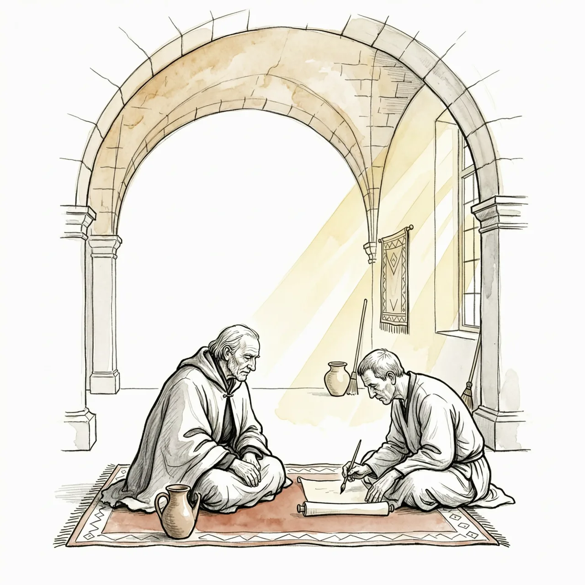
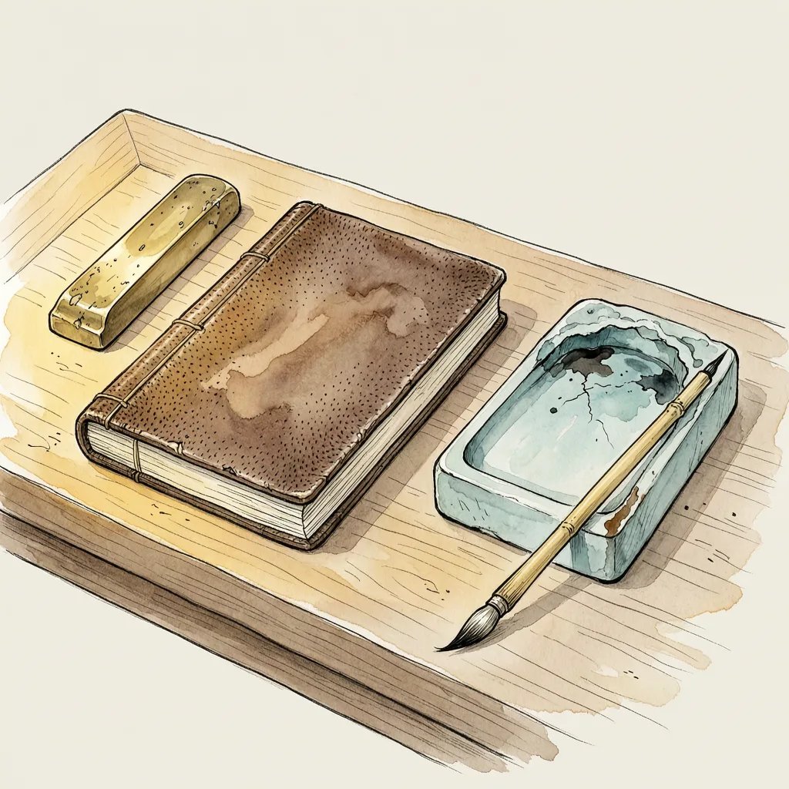

走了三十年，成书靠别人执笔。

1355年的非斯，马林王朝素丹把归来的伊本·白图泰交给一名书吏，命他口述三十年的旅程，据说断断续续说了七十五天。行者一路不曾记日记，这部著名游记从未有过作者手定稿本，世人读到的每个字都经过书吏的润色。
1324年，二十岁上下的伊本·白图泰离开丹吉尔。父亲是教法法官，他自幼受马立克学派的精英教育，这趟出门的名义是去麦加朝圣。他沿北非海岸穿过今摩洛哥、阿尔及利亚、突尼斯、利比亚到开罗，选了三条朝圣路线中最短也最少人走的一条：溯尼罗河而上，从今苏丹港口渡红海。行至苏丹恰逢当地爆发针对马穆鲁克统治的叛乱，他折转换路。麦加不是终点，此后他又去东非、波斯、印度、马尔代夫与东南亚，据说远达中国，足迹及于今天44个国家，全程约117,000公里。
空手出门能走远，靠的是法学家身份。14世纪的穆斯林世界共用阿拉伯语与法学派这套资格体系，印度洋各政权普遍稀缺教法学者，一名受过摩洛哥训练的法官，从德里到马尔代夫都抢着聘用。他沿途做法官、收统治者馈赠，凑足下一段路费；蒙古治世留下的欧亚通道又让旅行成为可能。矛盾也在这里：俸禄在他人手里。他一度被德里素丹派为使节前往中国，途中遭海盗劫掠，滞留马尔代夫数月又在当地任职。他在书中自记一路娶妻离婚多次。想停，是随时可以停的；想走，未必由他。
他回到摩洛哥时，父母已亡故多年。晚年剩下的一件事，是奉素丹之命向书吏伊本·朱扎伊讲述。书吏在非斯落笔，且自陈润饰删节过辞句——游记里每段的「我」，是行者的嘴、书吏的笔。书靠抄本流传，据说最早的一本是为素丹做的金抄本，今存巴黎。他是否真的到过中国，学界仍在争论；他生前无从校对手稿，因为没有手稿。讲完之后几年，他死在摩洛哥，生年精确到1304年2月24日，卒年却只留下一句「约1368年」。
